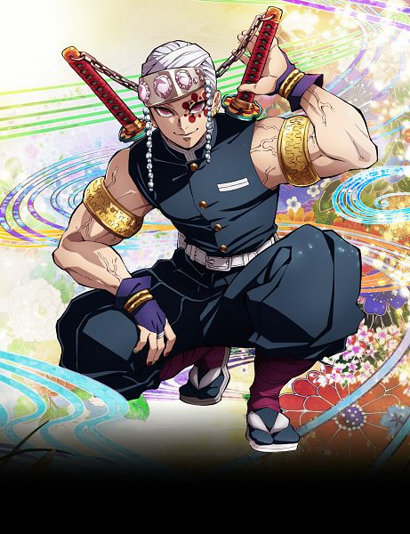
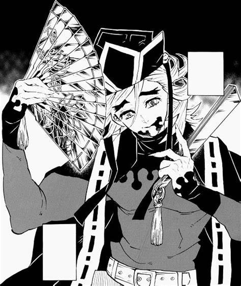
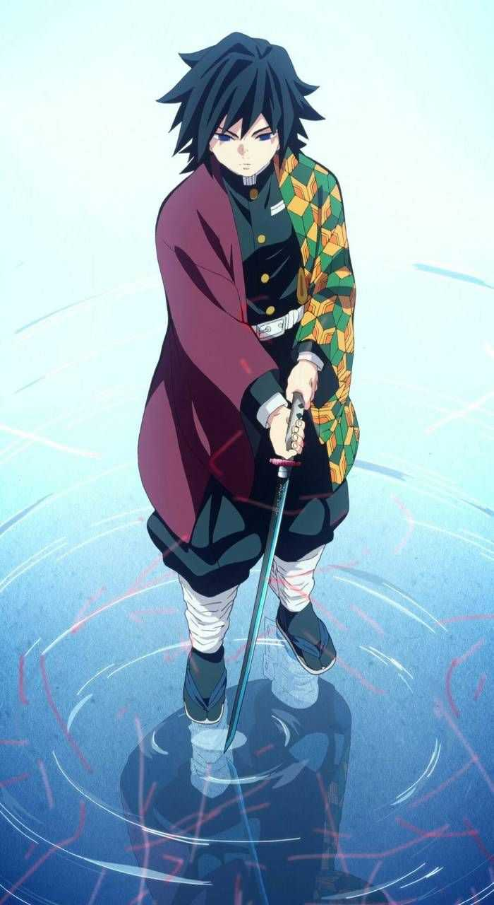
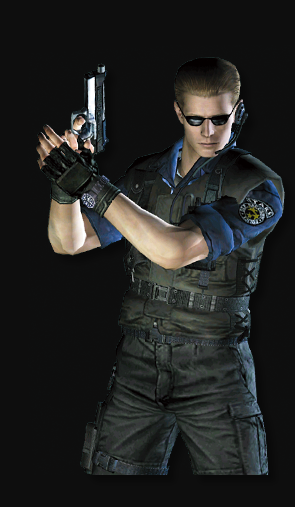
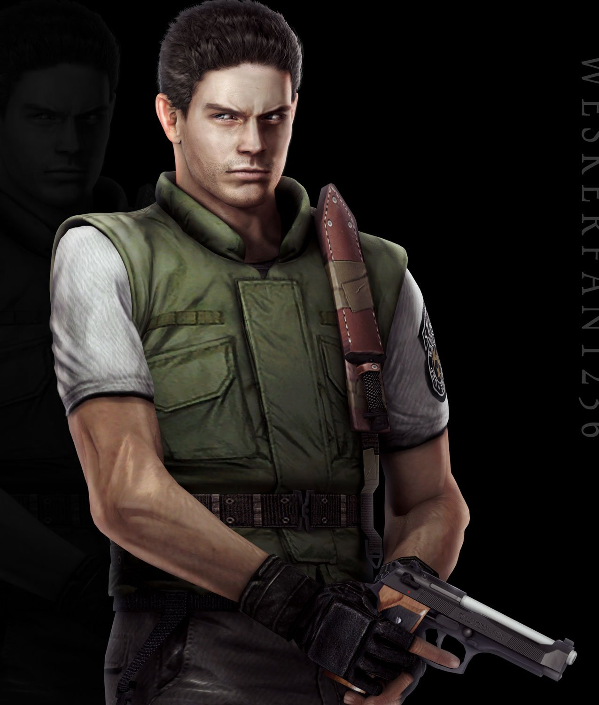
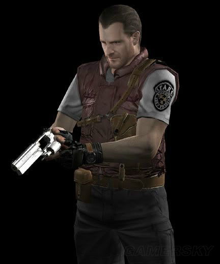
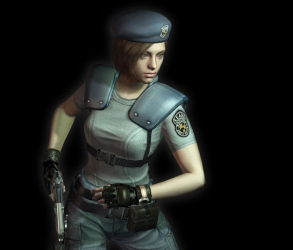

Me gusta mucho el Doblaje y Los videojuegos.
Akaza
Tengen forma parte de una organizacion que se dedica a acabar con los demonios, además, forma parte del grupo de espadachines más fuertes del cuerpo llamado "Los Pilares", es usuario de la respiración del "Sonido" y sus posturas se centran en atacar areas grandes con grandes y vistosos estruendos provocados por bombas ninja anti-demonios que solo el usa. Tengen no es un humano cualquiera pues antes de convertirse en cazador fue un shinobi entrenado desde niño, logrando asi obtener grandes habilidades asi como resistencia al veneno.
Douma es actualmente la Luna Superior 2, siendo un puesto más alto que Akaza en cuanto a fuerza y poder, Douma es un demonio que tiene la peculiaridad de no poseér ningún tipo de sentimientos por lo cúal debe actuar como si los tuviera, teniendo una "Personalidad" bastante activa y jugetona, su "tecnica demoniaca" consiste principalmente en congelar el aire a su alrededor y atacar usando hielo por lo que es muy complicado poder acercarse a el y poder atacarle.
Giyuu al igual que Tengen tambien forma parte de los Pilares, este poseé la respiración del Agua, es la más sencilla de aprender, sin embargo, logró dominarla a tal punto que fue capaz de crear una postura propia que consiste en redirigir cualquier ataque, siendo así el cazador con la mejor defensa de todo el cuerpo de cazadores, tiene una actitud muy fría y calmada ante cualquier situación lo que le permite tomar decisiones complicadas muy rápido.
Albert Wesker es uno de los dos únicos supervivientes del Proyecto Wesker, un proyecto secreto de Umbrella supervisado por el propio Ozwell E. Spencer, que consistía en darle vida a un ser humano perfecto creado gracias al virus Progenitor. El plan originalmente trataba crear una estirpe de seres humanos, todos ellos apellidados Wesker, los cuales tendrían todas las capacidades necesarias para sobrevivir al próximo cambio de siglo gracias al virus Progenitor. Sin embargo, el experimento fue un fracaso al ser Albert uno de los únicos supervivientes, ya que los demás infantes murieron al no soportar sus cuerpos el peligroso virus. Es presentado por primera vez como el capitán del equipo Alfa de los STARS. Tras entrar a la Mansión Spencer con el resto de ellos, desaparece para investigar. Luego, va apareciendo paulatinamente para comunicarse con los protagonistas -entre ellos Chris- y darles instrucciones. Al final del primer videojuego, traiciona a los STARS sobrevivientes y posteriormente es atravesado por un Tyrant (que él mismo liberó) y dado por muerto, pero sobrevive ya que se había inyectado el G-virus.
El rendimiento de Chris durante su período en STARS fue ejemplar, y por ello fue asignado al equipo Alpha. Parecía haber encontrado el lugar ideal para él, pero el destino tenía otros planes. Sin el más mínimo atisbo de sospecha, la historia de su vida estaba a punto de abrir un nuevo capítulo aquella fatídica noche del 24 de julio de 1998. El equipo Bravo de STARS, tras haber sido informado de las desapariciones sucedidas en los alrededores de Raccoon City, partieron a investigar lo que sucedía, pero repentinamente perdieron toda comunicación por radio con ellos. A causa de esto, el equipo Alpha fue enviado a investigar. Al poco de haber aterrizado se vieron atacados por voraces cánidos salvajes (conocidos como Cerberus), por lo cual Chris y los demás tuvieron que refugiarse en una mansión cercana, la mansión Spencer. Dicha mansión no era sino el Complejo de Investigaciones Arklay, utilizado por el gigante farmacéutico Umbrella. Fue precisamente allí donde se habían desarrollado armas biológicas y llevado a cabo innumerables experimentos ilegales. Allí Chris y su compañera Jill Valentine tuvieron que enfrentarse a hordas de zombis y otras mutaciones creadas por el T-virus como parte del plan de investigación táctica urdido por Albert Wesker, quien también mató a algunos de los supervivientes del equipo Bravo para que no dijeran a Chris y a Jill lo que habían descubierto sobre Umbrella.
Barry escapa y logra entrar a la mansión junto con sus compañeros Chris Redfield, Jill Valentine y Albert Wesker. Más tarde, ayuda a Jill en distintas trampas de la mansión. No obstante, Albert Wesker, quien trabaja para la Corporación Umbrella, chantajea a Barry utilizando a su familia como carnada para que lleve a cabo sus trabajos sucios. Barry comenzó a eliminar toda evidencia que implicaba a Wesker y condujo a Jill a las trampas con intención de matarla, pero ella logra convencerlo de que todo estaba mal. Fue gracias a Barry que Wesker encontró a Enrico (Miembro del equipo Bravo) y lo mató.
Jill es miembro de los STARS, un grupo de trabajo especial en el departamento de policía de Raccoon City. Es especialista en tácticas de combate, desarmar trampas explosivas y abrir cerraduras gracias a su paso por la Delta Force. Gracias a su experiencia en el entrenamiento de la fuerza de los Estados Unidos de América, Jill Valentine consigue ser uno de los supervivientes del incidente que se produjo en las Montañas Arklay y Raccon City.
Estos son Links que te llevarán a cierto lugar!.
Albert Wesker